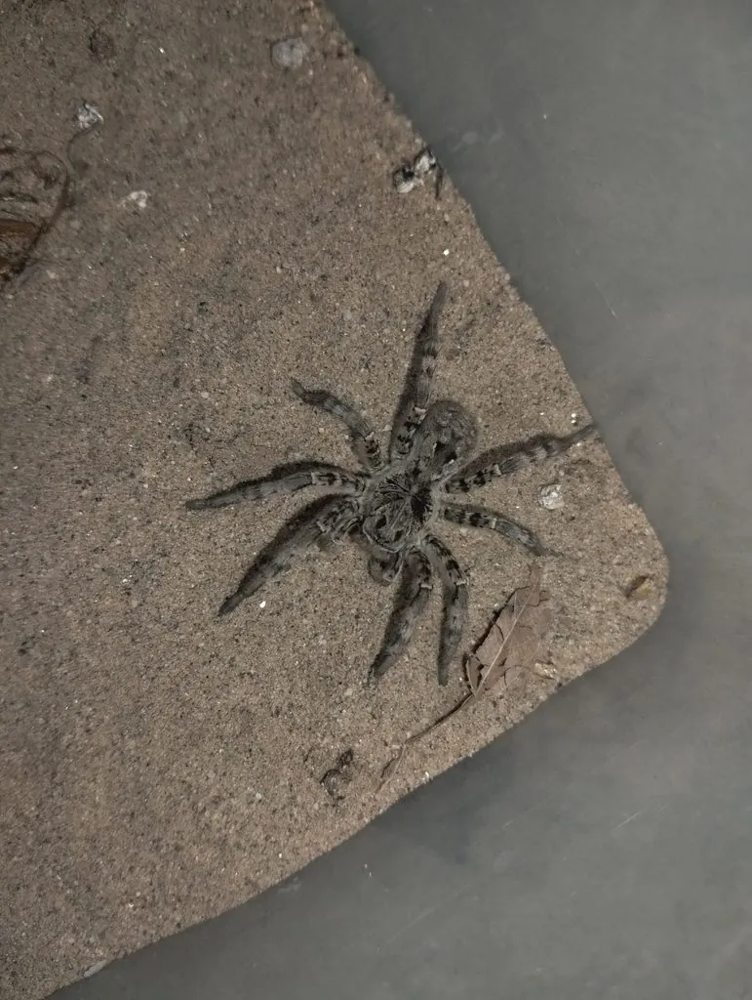

蛛形动物 · 动物界
中华狼蛛 Lycosa sinensis

中国北方农田和草地常见的大型狼蛛，不结捕猎网，靠伏击捕食昆虫，雌蛛会把卵囊和幼蛛带在身上。
- 分类
- 门节肢动物门纲蛛形纲目蜘蛛目科狼蛛科属狼蛛属
- 栖息环境
- 农田、田埂、草地、荒地与林缘的地面
- 地理分布
- 中国华北、东北及东部地区的农田与草地
- 保护级别
- IUCN 暂无评估；中国未列入国家重点保护名录
物种志
中华狼蛛雌蛛体长 20–30 毫米，雄蛛 15–20 毫米，是体型较大的狼蛛。它头胸部呈黑褐色并带浅色纵纹，腹部灰褐或黄褐色，八足粗壮多毛，足上密布刺毛；与结网蜘蛛不同，它不织捕猎网，而是在地面、田埂和草丛间游走伏击。
它分布于中国北方及东部地区的农田、草地、荒地和林缘，夜间活动，捕食蝗虫、蛾类、蚜虫等昆虫，是农业上的益虫。雌蛛产卵后会用一个圆形卵囊把卵包起来，挂在纺器上随身携带；幼蛛孵化后爬到母蛛背上生活一段时间才分散。中华狼蛛毒性弱，咬伤通常只引起轻微红肿，对人没有严重威胁；在野外遇到时不必惊慌，也不要徒手抓捕。
形态与习性
- 食性蝗虫、蛾类、蚜虫等昆虫
- 体长雌蛛 20–30 mm，雄蛛 15–20 mm
- 寿命约 1–2 年
- 繁殖卵生，雌蛛携带卵囊，幼蛛孵出后爬上母背
- 活动节律夜行性，白天藏在草丛土缝中
- 毒性毒性弱，咬伤通常只引起轻微红肿
趣味知识
- 中华狼蛛不结捕猎网，而是在地面游走、伏击路过的昆虫。
- 雌蛛会把圆形的卵囊挂在尾部随身携带，直到幼蛛孵化。
- 幼蛛孵化后会爬到母蛛背上生活一段时间，再分散独立。